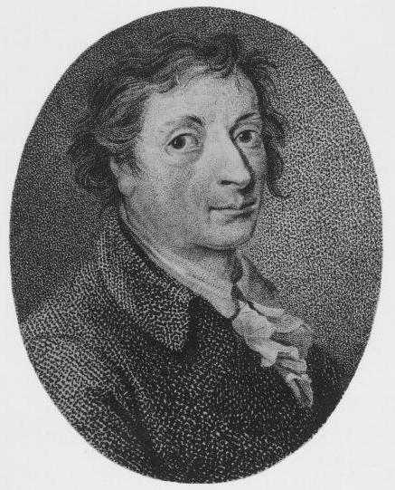
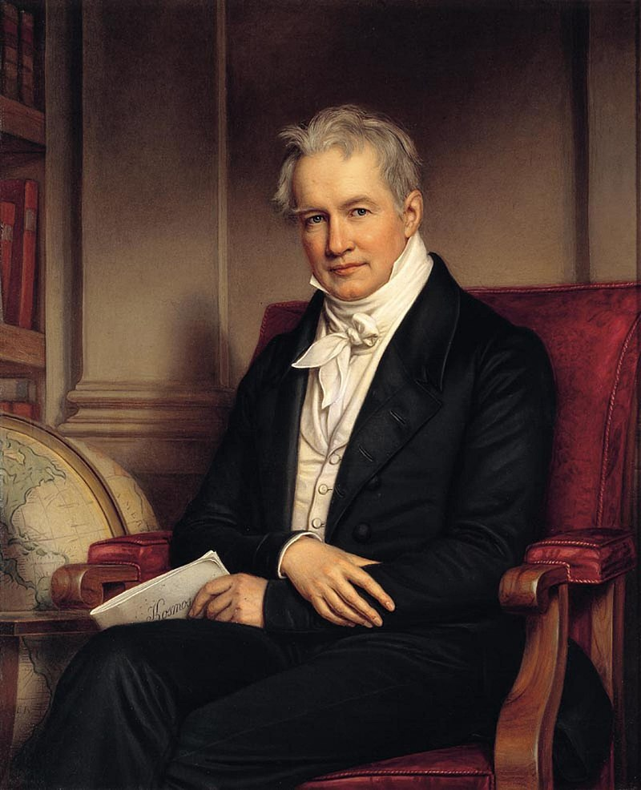
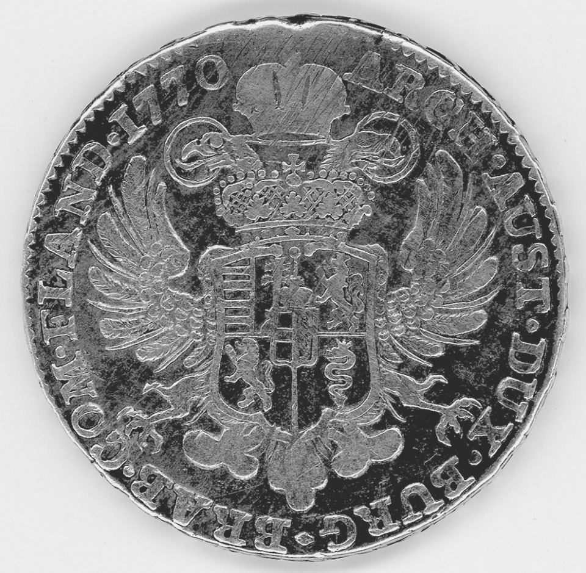
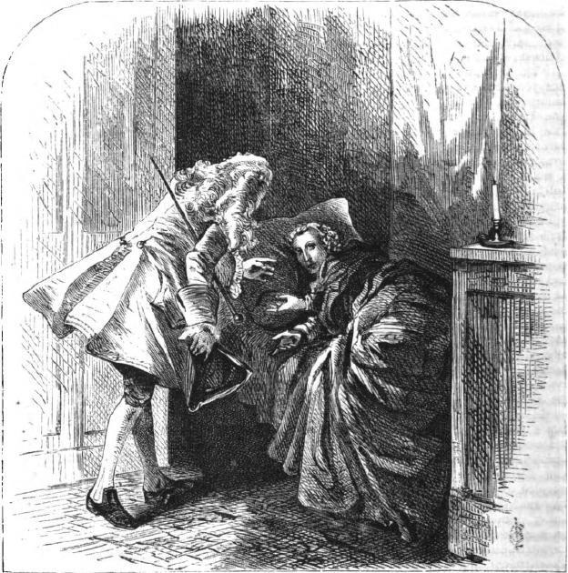

달콤한 프로이센 - 설탕과의 전쟁 (2편)
게시: 2018-05-14T07:25:19+09:00
1776년, 23세의 젊은 나이로 프로이센 왕립 과학 학회(Königlich-Preußische Akademie der Wissenschaften)의 회원이 된 프로이센 청년이 있었습니다. 이 청년의 이름은 아카르트(Franz Karl Achard)였습니다. 이름을 보면 순수 독일인 같지 않다고 느끼실 수 있는데, 제대로 보신 것입니다. 아카르트라는 집안은 원래 프랑스에서는 아샤르라고 발음되던 위그노(Huguenot, 프랑스 내의 개신교도) 집안으로서, 박해를 피해 독일로 이주한 사람들이었습니다. 요즘 같으면 이렇게 전도 유망한 이공계 인재는 대기업에 입사를 하든 스타트업 기업을 창업하여 주식으로 대박을 터뜨렸을지 모르겠습니다만, 당시에는 그런 학회 회원이 되었다는 것이 출세를 보장하는 것은 아니었습니다. 이 청년은 평민 목사의 아들로서, 귀족 위주로 돌아가던 프로이센 사회에서는 그저 좀 잘 나가는 땜쟁이 정도의 취급을 받았다고 할 수 있습니다.

(아카르트의 초상화입니다. 근사한 유채화로 된 초상화가 남아있지 않을 것을 보면 이 분의 최후를 짐작하실 수 있을 것입니다.)
하지만 이 청년은 학회 회원이 된지 불과 6년 만에 후원인격이었던 학자 마르그라프(Andreas Sigismund Marggraf)의 사망 뒤 그 뒤를 이어 학회 내 물리학 분과의 감독관이 될 정도로 두각을 드러냈습니다. 마르그라프도 그렇고 아카르트도 그렇습니다만, 정작 이 분들의 이름은 현대의 물리학이나 화학 교과서에 거의 나오지 않습니다. 당시 유럽의 선진국이었던 영국이나 프랑스에서 과학 기술이 급속도로 발전하며 험프리 데이비(Humphry Davy)나 달턴(John Dalton), 라브와지에(Antoine-Laurent de Lavoisier)와 앙페르(André-Marie Ampère) 등 요즘 중고등학교 교과서를 장식하는 기라성 같은 과학자들이 트럭 분량으로 쏟아져 나오던 것에 비해 프로이센의 과학 기술은 약간 초라한 편이었습니다. 당시 프로이센에서 가장 유명한 과학자라면 훔볼트(Friedrich Wilhelm Heinrich Alexander von Humboldt)가 있었습니다만, 훔볼트의 성장은 아버지가 군 장교라서 브라운슈바이크 공작을 대부로 둘 정도로 비교적 유복했던 살림살이 덕분이 컸습니다. 그는 남북 아메리카를 광범위하게 여행하며 얻은 지식과 경험을 바탕으로 당대 유럽 최고의 지리학자가 되었으니까요. 그나마 이 양반이 그렇게 유명해진 것도 미국 등 해외가 먼저였고, 훔볼트가 프로이센 왕립 과학 학회의 회원이 된 것은 그의 나이 36세였던 1805년이 되어서였습니다.

(훔볼트에 대해서 저는 중고등학교 때 해류에 대해서 배울 때 그 이름을 들었습니다. 전에 EBS 특집 방송을 보니, 이 분의 위대함은 해류 정도로 끝나는 것이 아니더군요. 당대 학계의 수퍼스타급 인물이셨습니다. 유익한 여행이라는 것은 어떻게 해야 하는 것이다라는 것을 보여주신 분이라고 할 수 있습니다.)
이렇게 프로이센의 과학 기술 토대가 부족했지만, 그래도 아카르트가 넉넉치 않은 집안 형편에도 과학자로서의 길을 걸을 수 있었던 것은 프로이센의 걸물인 프리드리히 대왕 덕분이었습니다. 프리드리히 대왕은 그저 전쟁질에만 뛰어난 군인 왕은 아니었습니다. 프리드리히 대왕이 1740년 왕위에 오르자마자 가장 먼저 한 일 중 하나가 베를린의 프로이센 왕립 과학 학회를 다시 오픈한 것이었습니다. 그의 아버지 프리드리히 빌헬름 1세(Friedrich Wilhelm I)는 '예산만 낭비할 뿐 명성은 런던이나 파리에 비해 현격히 떨어지는' 학회를 폐쇄한 바 있었거든요. 덕분에 칸트나 오일러(Leonhard Euler) 같은 학자들이 활약할 수 있었던 것입니다. 비록 그 정도의 명성은 없었지만, 아카르트도 말년의 프리드리히 대왕의 총애를 받던 젊은 과학자였습니다. 그는 2주일에 한 번 대왕을 직접 알현하고 그 동안의 연구 결과를 보고하는 시간을 갖기도 했습니다. 다만 눈에 띌 만한 대단한 업적은 만들지 못했습니다. 그나마 업적으로 인정받은 것은 독일 풍토에 적합한 담배 농사법 개발에 성공했다는 것이었고, 그 덕분에 연간 500 탈러(thaler)의 연금도 받게 되었습니다. 아마 500 탈러의 가치가 궁금하실텐데, 당시 1 탈러는 은 14분의 1 쾰른 마르크(Cologne Mark, 1 쾰른 마르크는 233.856g)의 무게를 가지는 은화였습니다. 은의 가치로 환산해보면, 대략 1만600원 정도입니다. 그냥 1 탈러 = 1만원이라고 보시면 되겠습니다. 500 탈러라고 해도, 대단한 거금은 아니었던 셈이지요.

(비슷한 시기 오스트리아와 독일에서 통용되던 탈러(Thaler) 은화입니다. 미국의 달러화 이름도, 비록 스페인 돈 이름을 거치긴 했지만, 궁극적으로는 여기에서 비롯된 것이라고 합니다.)

(영웅은 현자를 아끼고 존중하지요. 병석에서 볼테르를 처음으로 영접하는 프리드리히 대왕입니다. 볼테르는 당대 유럽 전체의 수퍼스타였지요. 볼테르는 편지에서 프리드리히를 '나의 트라야누스 황제'라고 불렀고 프리드리히는 볼테르를 '나의 소크라테스여'라고 불렀습니다. 이런 닭살 돋는 편지들의 끝은 그다지 좋지 않았습니다. 볼테르는 프리드리히의 궁정에서 염치없는 식객 노릇을 꽤 오래 했고, 볼테르가 마침내 떠날 때 프리드리히는 전혀 아쉬워하지 않았다고 합니다.)
아카르트의 진가는 프르드리히 대왕이 서거한 지 3년 후인 1789년부터 터지기 시작합니다. 그런데 이번에도 순수 과학과는 다소 거리가 있는 종목이었습니다. 이번에는 사탕무였지요. 그의 스승이자 후원자 격이었던 마르그라프는 1747년 경에 사탕무(sugar beet)에도 설탕 성분이 들어있다는 것을 밝힌 바 있었고, 거기서 설탕을 뽑아내는 공법에 대해서도 연구한 바 있었습니다. 아카르트는 설탕을 척박한 독일 땅에서도 생산하고자 하는 무척 실용적인 야망을 가지고 있었습니다. 당시 설탕은 공격적인 해외 침공과 비인간적인 노예 노동을 통해 카리브 해에 설탕 농장을 구축한 영국과 프랑스가 휘어잡고 있는 하얀 황금이었습니다. 유럽의 후발 주자였던 프로이센은 이들로부터 비싼 가격에 설탕을 사먹는 수 밖에 없었고, 프로이센 농민들과 공장 노동자들이 땀흘려 번 돈은, 노예 노동으로 생산된 설탕을 사는데 헛되이 소비되어야 했습니다. 나중에 프랑스 혁명이 터지고 생 도밍그(아이티)에 흑인 반란이 일어나면서 유럽 대륙의 설탕 공급은 그야말로 영국에게 의존하게 되었습니다.
아카르트의 노력은 베를린 근처 그의 농장에서 여러가지 식물을 재배하는 것부터 시작되었습니다. 아무래도 가장 설탕 함량이 높았던 것은 역시 사탕무였고, 그는 여러가지 사탕무 종자에 다양한 비료를 줘가며 재배를 계속 했습니다. 사탕무는 열대 기후에서는 잘 자라지 않고, 북유럽 기후에서 오히려 높은 당도를 내는 식물이었습니다. 도중에 그의 농장에 불이 나는 바람에 쫄딱 망하는 불운을 겪기도 했지만, 그는 슐레지엔으로 거점을 옮겨 연구(...라 쓰고 농사라고 읽습니다)를 계속 했습니다.
그는 곧 성과를 냈습니다. 여기에는 할아버지 프리드리히 대왕의 유지를 받들어 과학자(...라 쓰고 농부라고 읽습니다)에 대한 지원을 계속한 빌헬름 3세(Friedrich Wilhelm III, 예나-아우어슈테트에서 나폴레옹에게 털리는 그 사람 맞습니다)의 후원이 큰 역할을 했습니다. 국왕의 자금 지원에 힘입어 1801년 그는 슐레지엔의 쿠네른(Kunern)에 세계 최초의 사탕무 정제 공장을 세웠습니다. 바로 다음 해 이 공장에서는 400톤의 사탕무를 가공하여 16톤의 설탕을 생산하는데 성공했습니다. 독일 땅에서 설탕이 나온다 ! 이건 마치 북한 땅에 석유가 난다는 것과 거의 동일한 충격이었습니다. 구미가 당긴 빌헬름 3세의 지원에 힘입어 아카르트의 제자들은 프로이센 여기저기에 사탕무 정제소를 세우기 시작했습니다. 산유국, 아니 산당국(産糖國)의 꿈이 손에 닿는 듯 했습니다.
그러나 꿈은 쉽게 이루어지지 않는 법입니다. To be continued...
Source :
https://en.wikipedia.org/wiki/Franz_Karl_Achard
https://en.wikipedia.org/wiki/Alexander_von_Humboldt
https://en.wikipedia.org/wiki/Sugar_beet
https://en.wikipedia.org/wiki/Prussian_Academy_of_Sciences
https://en.wikipedia.org/wiki/Frederick_the_Great
https://en.wikipedia.org/wiki/Prussian_Academy_of_Sciences